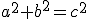

APRENDE Y APLICA
Ternas pitagóricas son conjuntos de tres números, por ejemplo 5, 4 y 3, que verifican la relación . Hay muchas más. ¿Nos valdría cualquier terna de números? Trabajando en grupo, intentad encontrar más conjuntos de tres números que verifiquen esa relación.
Si esos números que forman ternas pitagóricas y verifican la expresión algebraica corresponden a las medidas de los lados de un triángulo, sabemos que el triángulo es rectángulo. Tendremos enunciado para el Teorema de Pitágoras:
En un triángulo rectángulo, el cuadrado de la hipotenusa es igual a la suma de los cuadrados de los catetos:
El Teorema de Pitágoras tiene también sus implicaciones geométricas. Nos habla de la relación entre las áreas de los cuadrados que se pueden construir en esos lados:
¿Y quizás algo más allá?
Además, tenemos que ser capaces de aplicarlo a situaciones reales y contextualizadas, identificando ángulos rectos, triángulos rectángulos, sus catetos e hipotenusa, y así poder resolver las cuestiones que se nos planteen.a^2+b^2=c^2